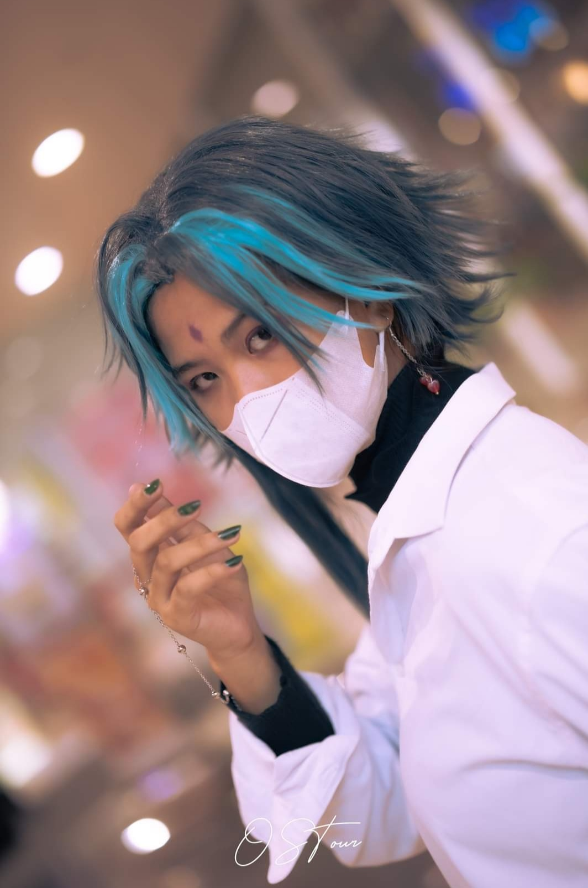
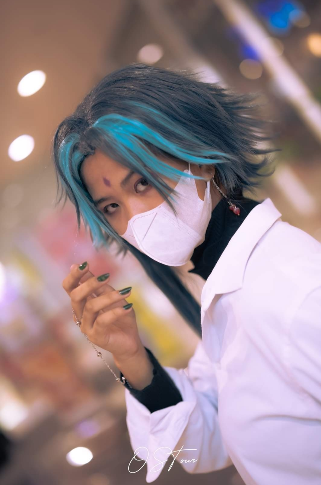

Let me introduce myself. My name is Joyce Ann R. Blanza, you can call be Joyce. I just turned 21
last July 12. I was born and raised in Quezon City. I'm a working-student currently studying at
Quezon City University taking Bachelor's of Science Information Technology as a freshman and working at
Concentrix as a Technical Advisor since last July 2023.
I have two older brothers and three younger siblings. My mom is a housewife and my father works as a
a chef at a catering service. I graduated as an Information and Communication Technology student at Asian
Institute of Computer Studies back in 2022. I had to take two gap years in order to support myself and help my
family as well.
I have a lot of hobbies but what they all have in common is that they revolve around art. I do
digital and traditional art, crochet, beadwork, and as well as nail art. I mostly do crochet
no because it works best for my schedule. Here are some samples of what I do!
Aside from those mentioned above, I occasionally do cosplay as well if I'm not too busy. I haven't done a lot but here's a few. So far, I have cosplayed Xiao from Genshin Impact, Deku from My Hero Academia, and Reiju from One Piece. Here are some photos if you want to see!
 

A few more things that I enjoy are reading books and watching movies. I like reading classic novels but recently what stood out to me and my current favorite is The Seven Husbands of Evelyn Hugo written by Taylor Jenkins Reid. I'm also a big fan of the Marvel Cinematic Universe. My favorites includes Loki, Tony Stark, and Yelena. I'm also a big fan of music. I listen to all kinds of music like pop, kpop, jpop, punk, rock, alt, theater, etc.
Enough about what I like. Let's talk about what I aspire to be. Let's be honest here. The main goal is to be rich. I would be lying if I said that rich is not what I want to be someday but, aside from that what I want to be as well is to be known as a good, respectable person. I have a strong sense of justice and I value my morals above everything. I want to be someone who can be of help o everyone aorund me. I want to be a shoulder that they can lean on and hopefully I be that person someday.